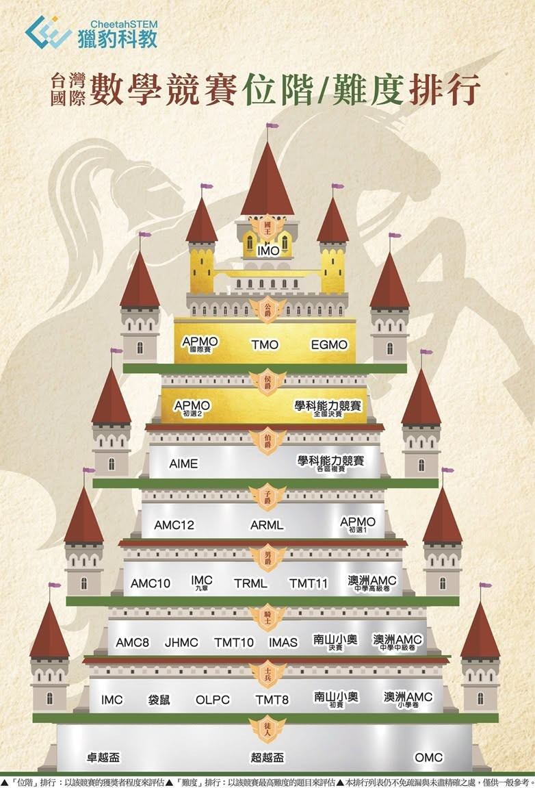

談談小學數學競賽～給中小學家長的溫馨提醒！
無庸置疑地， 「數學」是建立核心學習力最關鍵的科目‼️
因此全球每一個國家的國民基礎教育（K-12)都安排整整12年的數學課程（只有本國語言有如此待遇）。
因此有遠見、有見識的家長沒有不關心孩子數學教育的。
但，兩個普遍廣為流傳的「迷思」：
迷思1.有天份/潛力的孩子 一定會在「數學競賽」表現突出。
迷思2.針對「數學競賽」的教學便是資優教育。
以獵豹老師們累積的教學經驗、資歷（超過30年），教學的績效（拿遍所有大獎、學子遍歷世界頂尖大學），涵蓋面之廣（學生分佈台灣、中國大陸、亞洲、歐美，從小學到大學），專業之深（資深資優教師、競賽教練、博士學者、教授），
我們希望能「破除迷失 導正視聽」。
關於迷思1.
數學潛力/才華的展現有許多不同的面向。
所謂鐘鼎山林，各有天性。
有的孩子反應快、直覺強，對數字敏感高，擅長考試，適合競技。
有的孩子想得深 ，看得透，喜歡深思熟慮、追根究底 。
有的孩子則是天馬行空、富想像力、有創意 ，喜歡科研。
因此許多很有數學才華的孩子，不一定會喜歡或不擅長數學競賽。（著名的數學家不乏其例，獵豹 教過許多這樣的孩子。）
固然有少數孩子是天縱英明，但更多成功的孩子其實是靠勤奮努力 、不畏挫折而終於成大器。
關於迷思2更是大謬！
好的數學啟蒙教育是要讓孩子：（依重要性排序）
a.建立良好的「邏輯推理、觀察歸納」的能力。
b.學習卓越的思維方式與分析方法。
c.訓練「科學方法」。
d.架構良好的知識系統。
e.技巧純熟地處理問題。
然而「針對數學競賽」的教學更直接露骨的描述是「針對數學競賽分數」的教學！
因此形成只以上述e為狹隘目標的教學：
追求速成的「狂刷題目」、
不求甚解的「公式口訣」、
記憶背誦的「技巧與套路」..
構成了教學內容的主軸。
這些追求短期利益，用華麗分數/獎狀作糖衣包裹著有毒元素的數學教學，迷惑了許多家長。長此以往 ，等到日後副作用漸漸呈現（扼殺興趣、沒有耐心深入思考、沒有能力獨立面對新問題、沒有方法分析複雜的問題..），卻因積弊已深，學習慣性的根深蒂固，終於難以回天❗️
獵豹的教學目標（尤其在國小啟蒙至國ㄧ階段）特別強調以啟發興趣，結合上述a~d為主、e為輔的多元發展。
以興趣為前提來參與競賽，良性競爭。不追求分數/獎項為目標來造成孩子學習壓力。
當然參加競賽如果得獎了，我們替孩子高興，也嘉許他們的勤奮努力。
分數不理想、沒得獎 ，也不要在意，因為與優秀同儕參與比賽而提升了興趣、增強了實力，過程本身便具有意義。
學習是條漫漫長路，家長多鼓勵孩子，孜孜不倦 、持續努力必有回響❗️
前幾天獵豹的高微老師在偶然機會，調查了Pk4班上同學參與競賽的情況，獵豹小學子果然菁英薈萃、臥虎藏龍，得獎無數！
大家或許知道，對於國中七年級以下的孩子，獵豹除了AMC8，不主動鼓勵孩子參加一般競賽，因此很少刊登小學競賽榜單。（不希望讓家長因比較而焦慮 ）
但對於獲獎的獵豹孩子，我們對他們的努力與成績是衷心地欽佩並深感與有榮焉！
